Ubuntu Server en AWS Learner Lab¶
Revisiones
| Revisión | Fecha | Descripción |
|---|---|---|
| 1.0 | 11-10-2025 | Adaptación de los materiales a markdown |
Instalación del servidor
A continuación se describen los pasos para crear un servidor Ubuntu en un laboratorio de aprendizaje de AWS Academy.
-
Habrás recibido un correo electrónico de invitación, haz clic en el enlace y crea tu cuenta.
-
Entra al curso y haz clic en el enlace Lanzamiento del laboratorio (la primera vez que entres deberás aceptar los términos de uso). Para entrar en el futuro, utiliza el enlace: https://www.awsacademy.com/vforcesite/LMS_Login
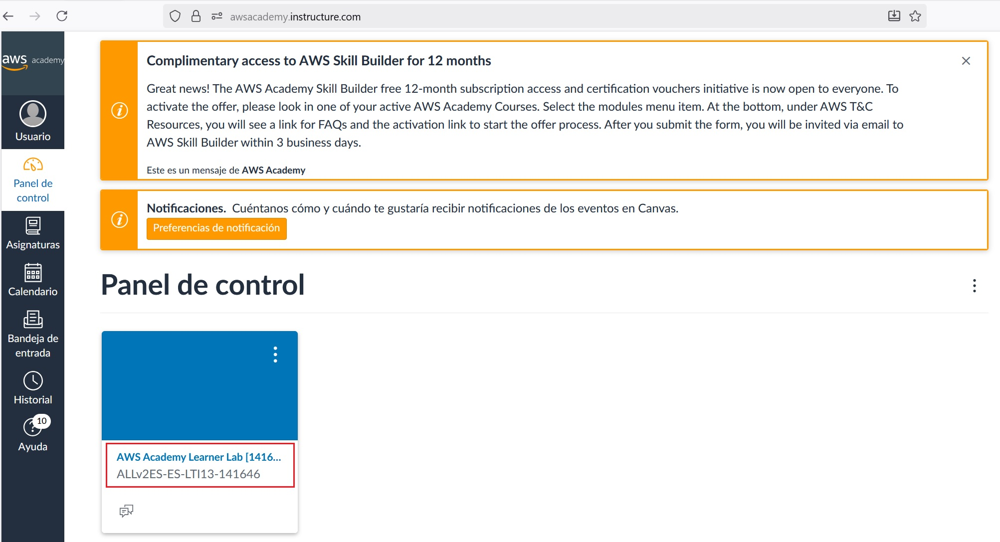
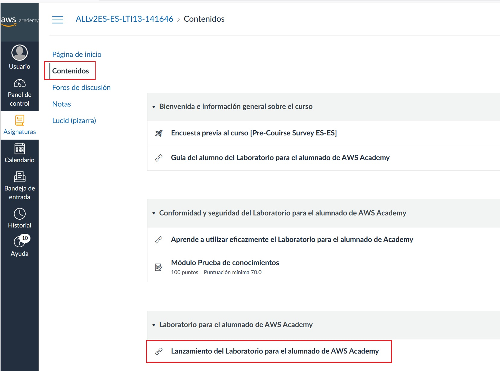
-
Haz clic en el botón Start Lab (el círculo cambiará a color amarillo mientras arranca el laboratorio).
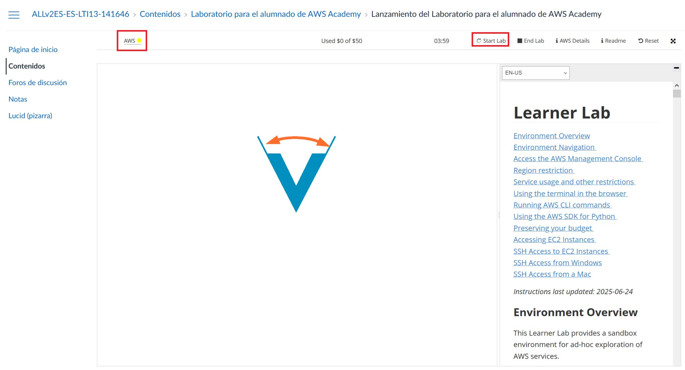
-
Cuando el laboratorio haya arrancado, el círculo estará de color verde y aparecerá el saldo consumido y disponible.
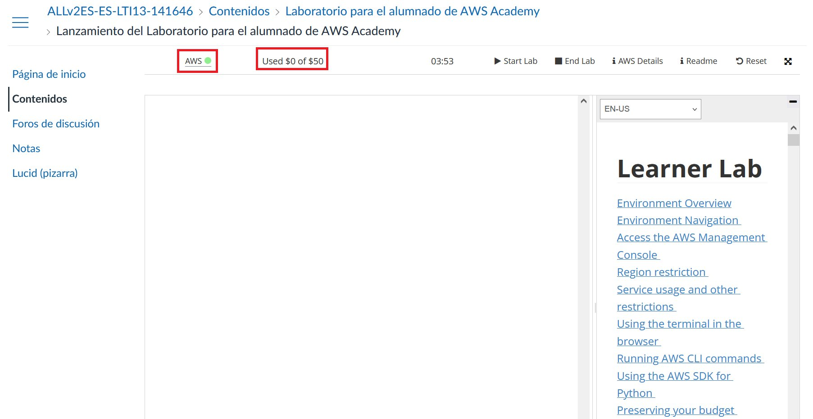
-
Haz clic en AWS para acceder a la Página de inicio de la Consola cuya región es North Virginia (us-east-1), la región por defecto de los laboratorios de aprendizaje.
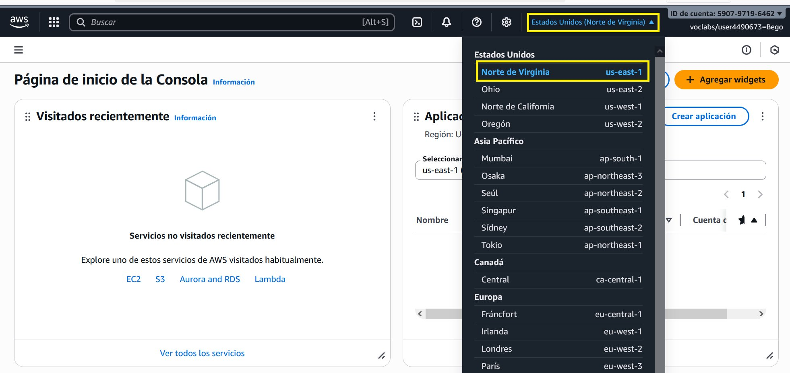
-
Haz clic en EC2 para acceder a la consola de instancias EC2.
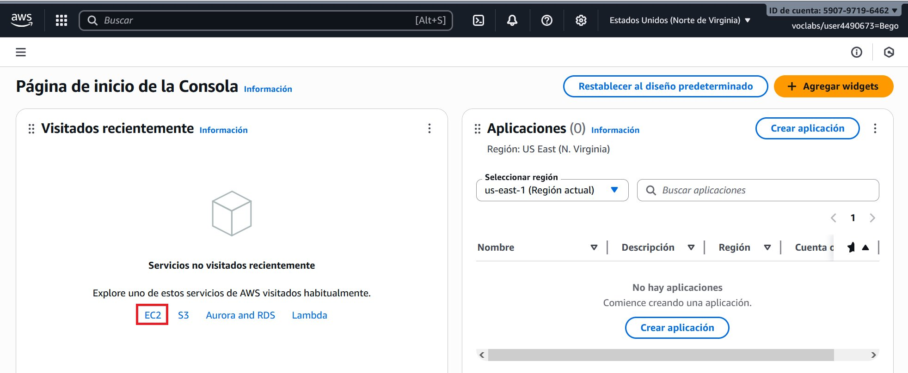
-
Haz clic en Lanzar la instancia:
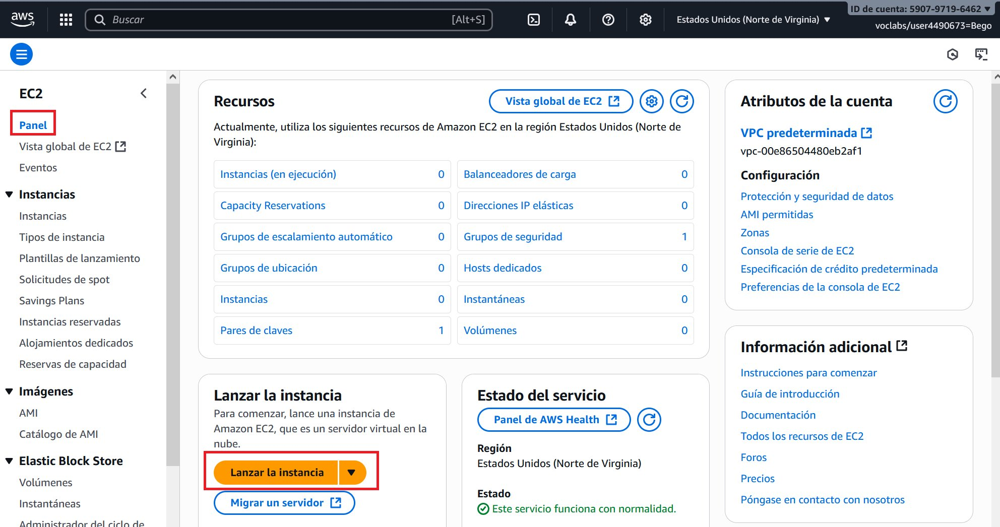
-
Escribe el nombre de la instancia y elige una Amazon Machine Image (AMI) en este caso Ubuntu (al seleccionar ubuntu nos aparece la Ubuntu Server 24.04 LTS que es apta para utilizar de forma gratuita).
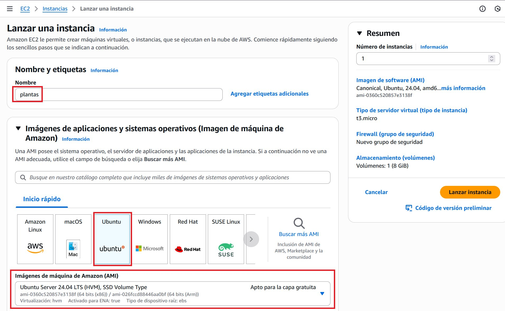
-
Más abajo aparece el tipo de instancia:
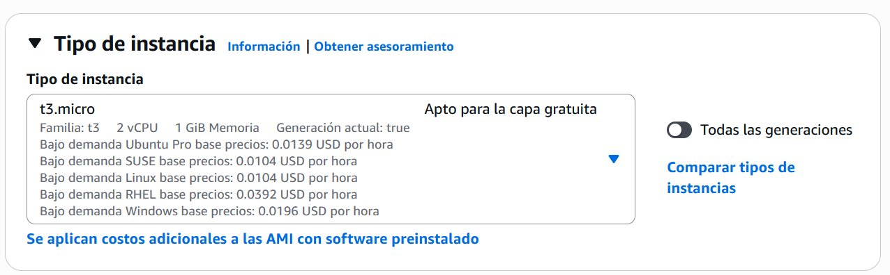
-
Crea un par de claves:
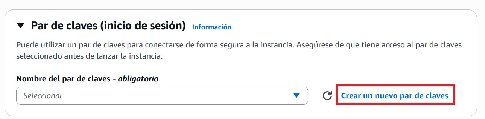
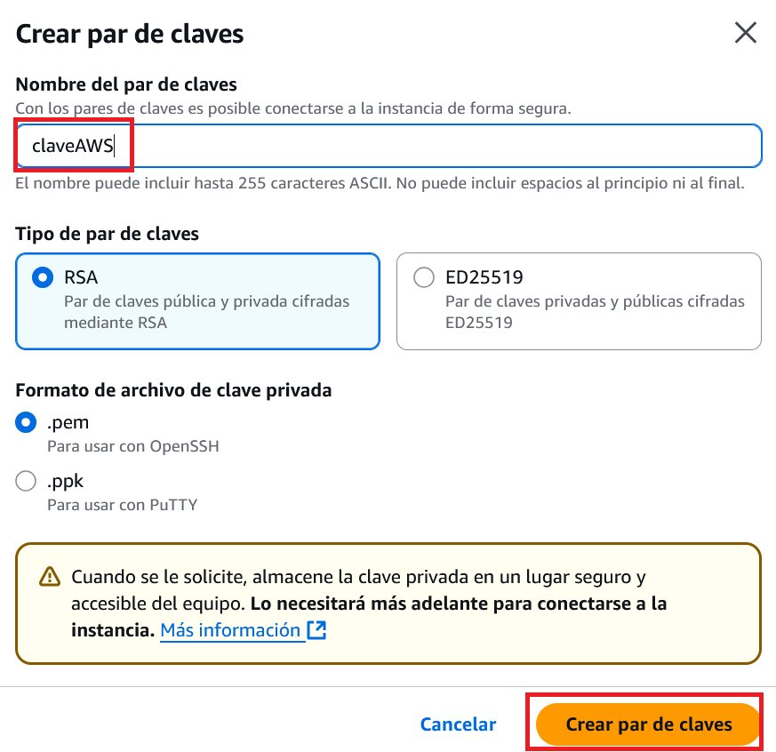
-
Verás que el navegador descarga la clave automáticamente:
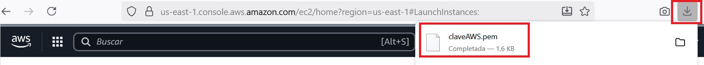
Muy importante: guarda el fichero de la clave en lugar seguro porque te hará falta para conectar a tu servidor por SSH.
.
-
Deja el resto de opciones como están y, en la parte derecha dentro del apartado Resumen, haz clic en el botón Lanzar instancia. Cuando la instancia termine de lanzarse aparecerá:
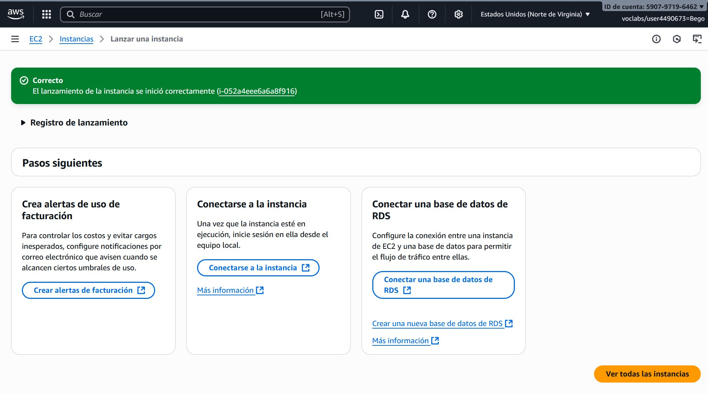
-
Haz clic en el botón Conectarse a la instancia para ver las instrucciones de conexión al servidor en la pestaña SSH:
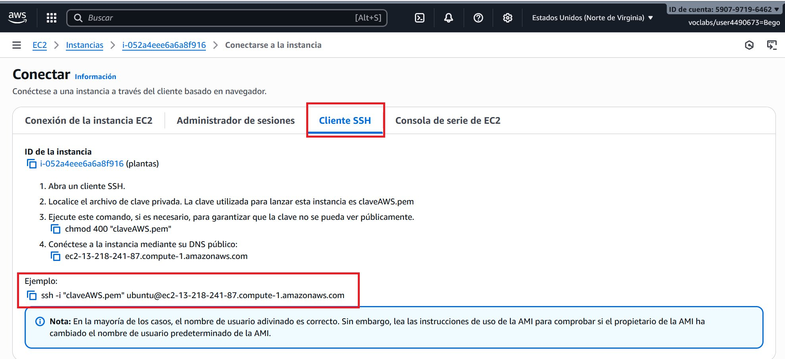
-
Prueba la conexión. Para ello escribe en una ventana de comandos (el archivo .pem ha de estar en la carpeta desde la que lanzamos el comando) lo siguiente (sustituye el nombre de tu archiv .pem y el nombre de tu servidor):
ssh -i claveAWS.pem ubuntu@ec2-13-218-241-87.compute-1.amazonaws.com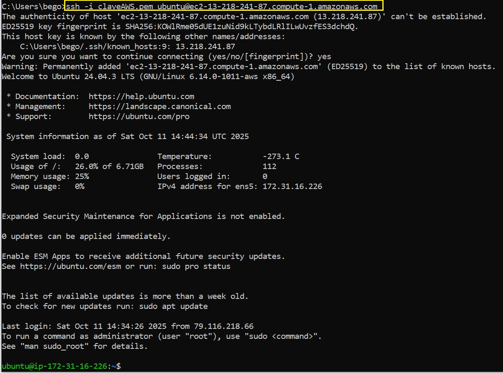
Instalación de MySQL
- Actualiza la lista de paquetes del servidor:
sudo apt update - Instala el servidor MySQL y las dependencias necesarias:
sudo apt install mysql-server -
Ejecuta el script de seguridad para establecer una contraseña de usuario root, eliminar usuarios anónimos y deshabilitar el inicio de sesión remoto del usuario root:
sudo mysql_secure_installation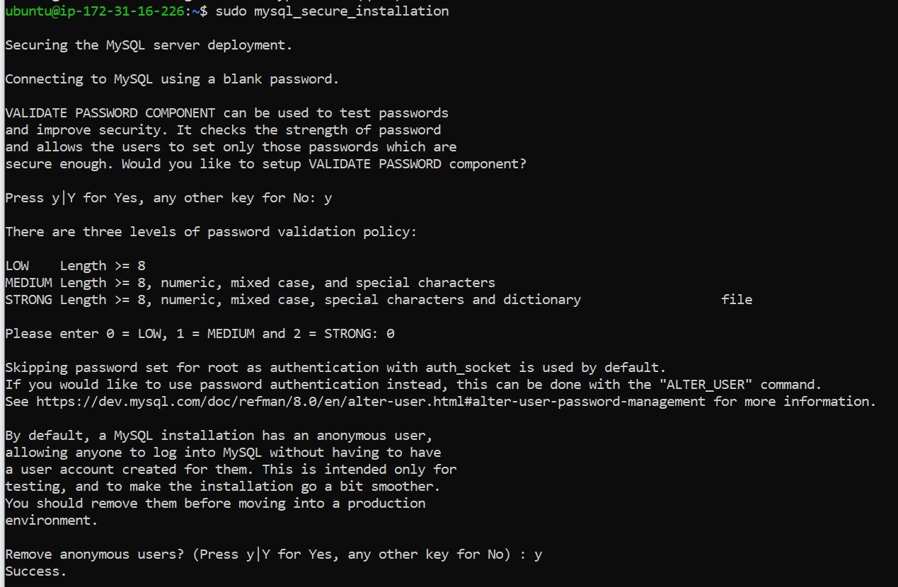
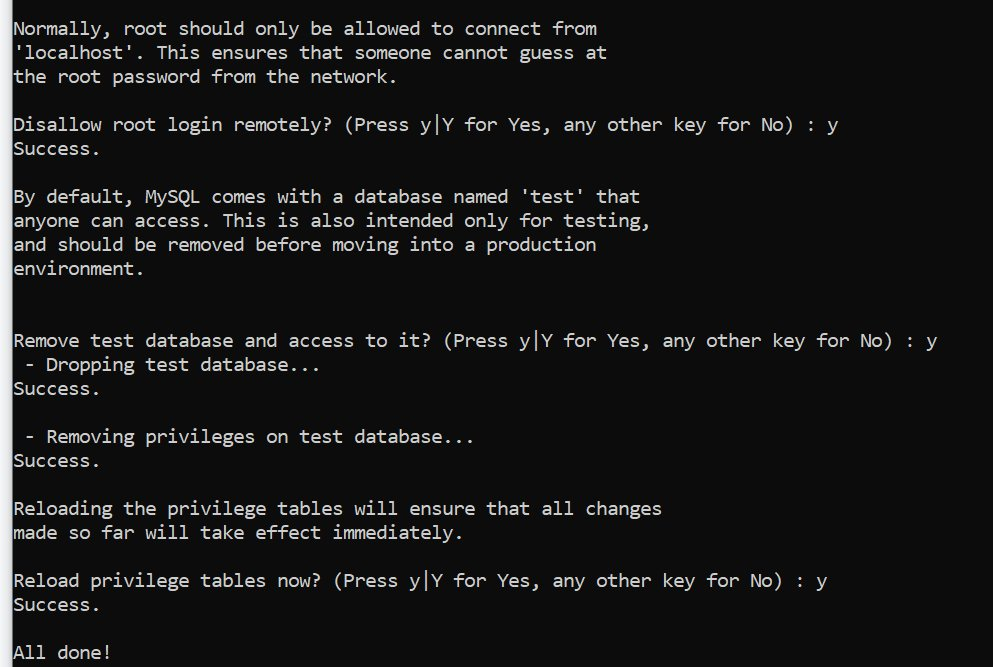
-
Comprueba que el servicio de MySQL se esté ejecutando correctamente (si no está activo, puedes iniciarlo con
sudo systemctl start mysql):sudo systemctl status mysql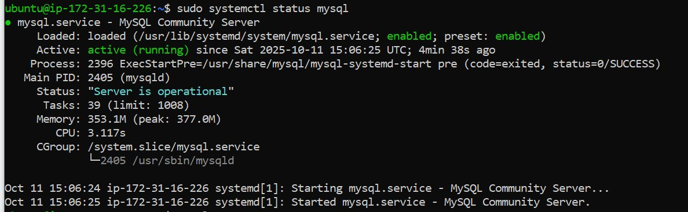
-
Permite conexiones externas. Para ello edita el fichero de configuración
sudo nano /etc/mysql/mysql.conf.d/mysqld.cnfy cambia lo siguiente:-
Comenta
bind-address = 127.0.0.1 -
Añade la línea
bind-address = 0.0.0.0
Para que el fichero de configuración quede como se ve en la siguiente imagen:

-
-
Reinicia el servicio:
sudo systemctl restart mysql
Configuración de un usuario MySQL
-
Entra al servidor MySQL (dejar la contraseña en blanco)
sudo mysql -u root -p -
Crea el usuario con su contraseña
CREATE USER 'bpl2'@'%' IDENTIFIED BY 'holaHOLA01+'; GRANT ALL PRIVILEGES ON *.* TO 'bpl2'@'%'; FLUSH PRIVILEGES; SHOW GRANTS FOR 'bpl2'@'%'; exit
-
Añade una regla en el servidor para permitir el tráfico entrante del puerto 3306.
- Ve a la consola de AWS y encuentra tu instancia EC2.
- Haz clic en la pestaña "Security" y luego en el enlace del Security Group asociado.
- Ve a la sección "Inbound rules" y haz clic en "Edit inbound rules".
- Haz clic en "Add rule" y configura:
- Type: Custom TCP
- Port range: 3306
- Source: Puedes especificar una IP concreta o
0.0.0.0/0para permitir acceso desde cualquier lugar (menos seguro).
- Guarda las reglas.
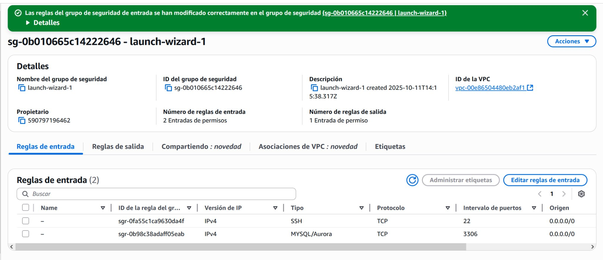
-
Prueba a conectar a tu base de datos.